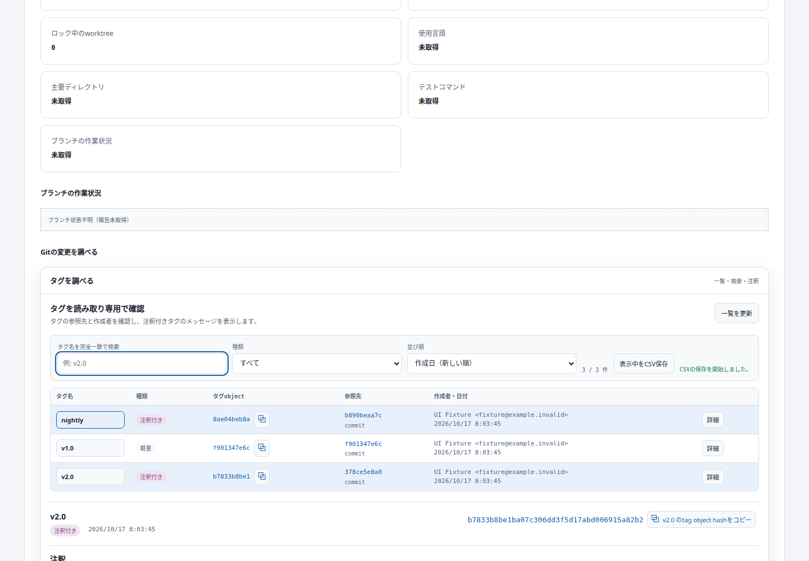
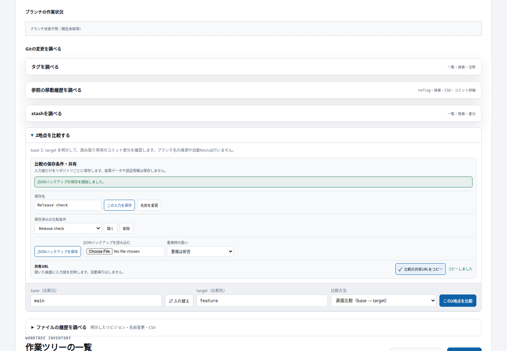

タグ・参照の移動履歴（reflog）を調べる画面と、比較・ファイル履歴の調査条件を保存して再利用する機能を追加しました。
開始30点＋機能追加14件×5点＝100点。既存機能の再利用や実装中の修正を重複加点していません。点数は指定の加点基準によります。
| Area | New capability and value | Classification | Points |
| Tags | Browse names, tag-object identities, final targets, creators and dates to locate release points | Feature | 5 |
| Tags | Search a tag by exact name | Feature | 5 |
| Tags | Filter lightweight and annotated tags | Feature | 5 |
| Tags | Inspect bounded annotation metadata/message and the target commit | Feature | 5 |
| Tags | Sort by name or creator date, keeping unknown dates last | Feature | 5 |
| Tags | Export matching tag inventory as formula-safe CSV | Feature | 5 |
| Reflog | Read explicit HEAD/full-ref movement history to investigate local operations | Feature | 5 |
| Reflog | Search retrieved action messages, actor and hash | Feature | 5 |
| Reflog | Filter actual movement dates by inclusive local-calendar range | Feature | 5 |
| Reflog | Export matching retrieved movement records as CSV | Feature | 5 |
| Reflog | Inspect the commit reached by a selected movement | Feature | 5 |
| Conditions | Save, name and reopen complete investigation inputs per repository | Feature | 5 |
| Conditions | Export/import validated JSON backups with explicit conflict handling | Feature | 5 |
| Conditions | Share compare/history input values by URL, without automatic execution | Feature | 5 |
検証: frontend 186件・backend 206件成功、本番ビルド成功、レビューP1解消済み。GUIでコピー・CSV/JSON内容、タグ注釈、reflog日時、保存・復元、共有URLの入力復元と未実行状態を確認。PC/モバイル、ライト/ダーク表示も確認しました。
指定Composeで反映しFrontend/Backend稼働、health正常。アプリを開く / 詳細記録と制限


reflogは直近1,000件、タグ注釈は64,000バイトまで取得。上限や未取得状態を明示します。保存データの破損や同時更新は上書きせずエラーを表示します。